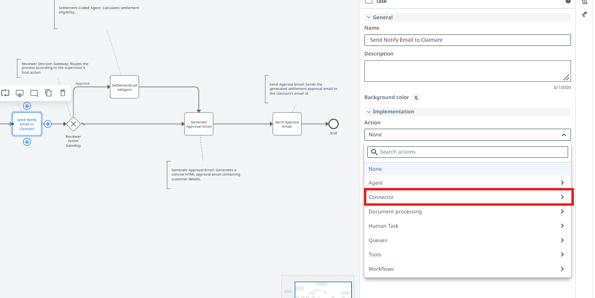
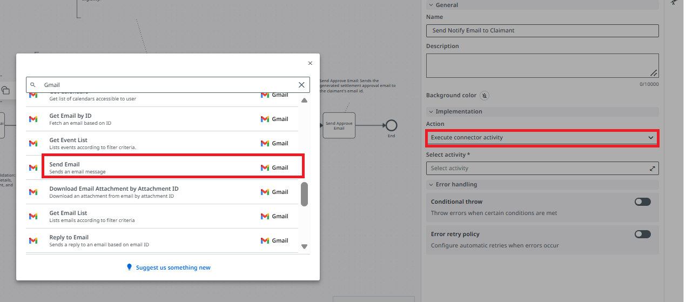
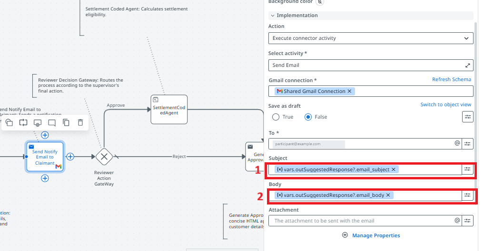

Notify the Claimant
After the supervisor task, the process sends an interim notification to the claimant using the Gmail connector.
44
Select the connector
Select the task Send Notify Email to Claimant and set Implementation → Action to Connector.
Maestro · Task

Set Action to Execute connector activity, click Select activity, search Gmail, and choose Send Email.
Maestro · Select activity

Chose Execute connector activity → Gmail Send Email.
45
Map the email fields
Choose the Gmail connection Shared Gmail Connection, set Save as draft = False, and fill the fields. Use your own email address in To so you receive the test email.
| Field | Value |
|---|---|
| To | your own email address |
| Subject | vars.outSuggestedResponse?.email_subject |
| Body | vars.outSuggestedResponse?.email_body |
Maestro · Send Email

📝 Tip
Use Insert variable → out_SuggestedResponse →
email_subject / email_body if you would rather not type the expressions.Set the Gmail connection and Save as draft = False.
Mapped To, Subject, and Body.
The UiPath word mark, logos, and robots are registered trademarks owned by UiPath, Inc. and its affiliates. © 2026 UiPath. All rights reserved. · Training material.